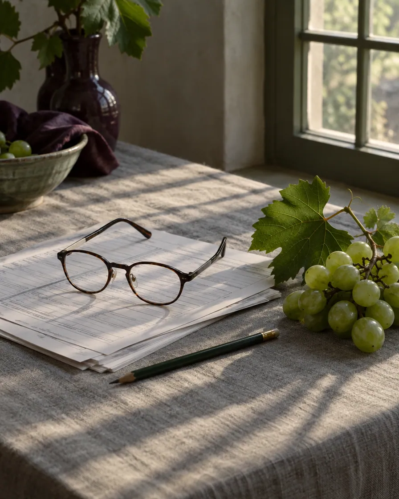
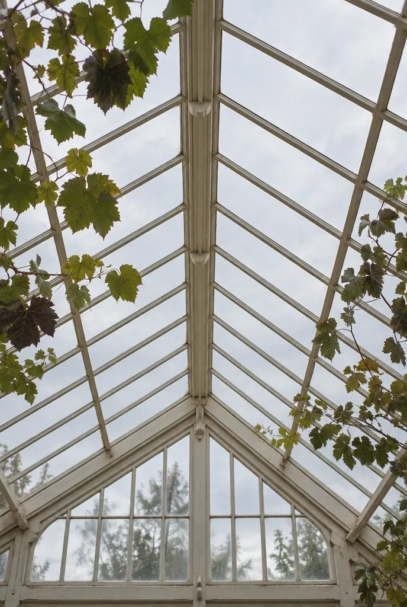
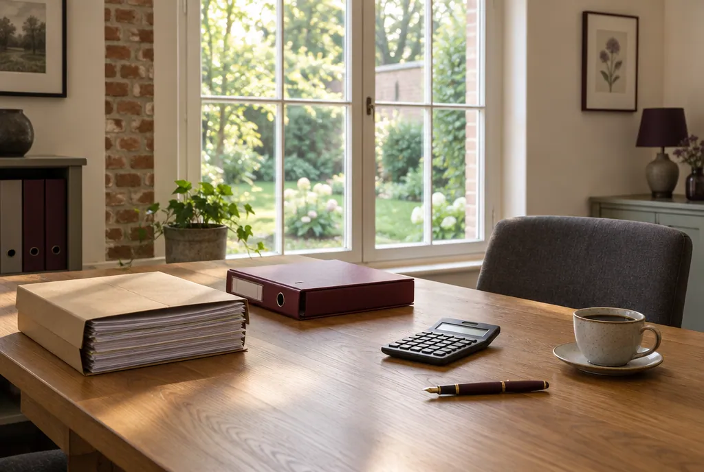
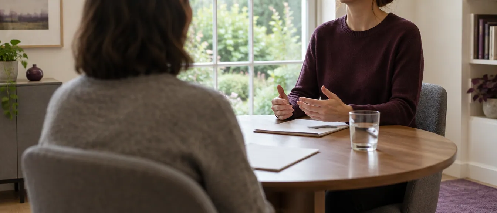
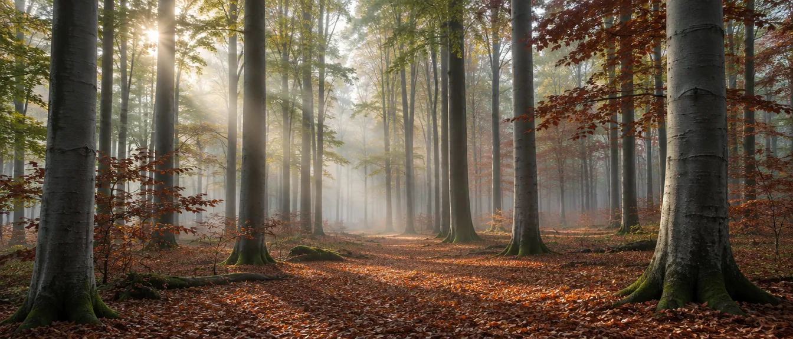
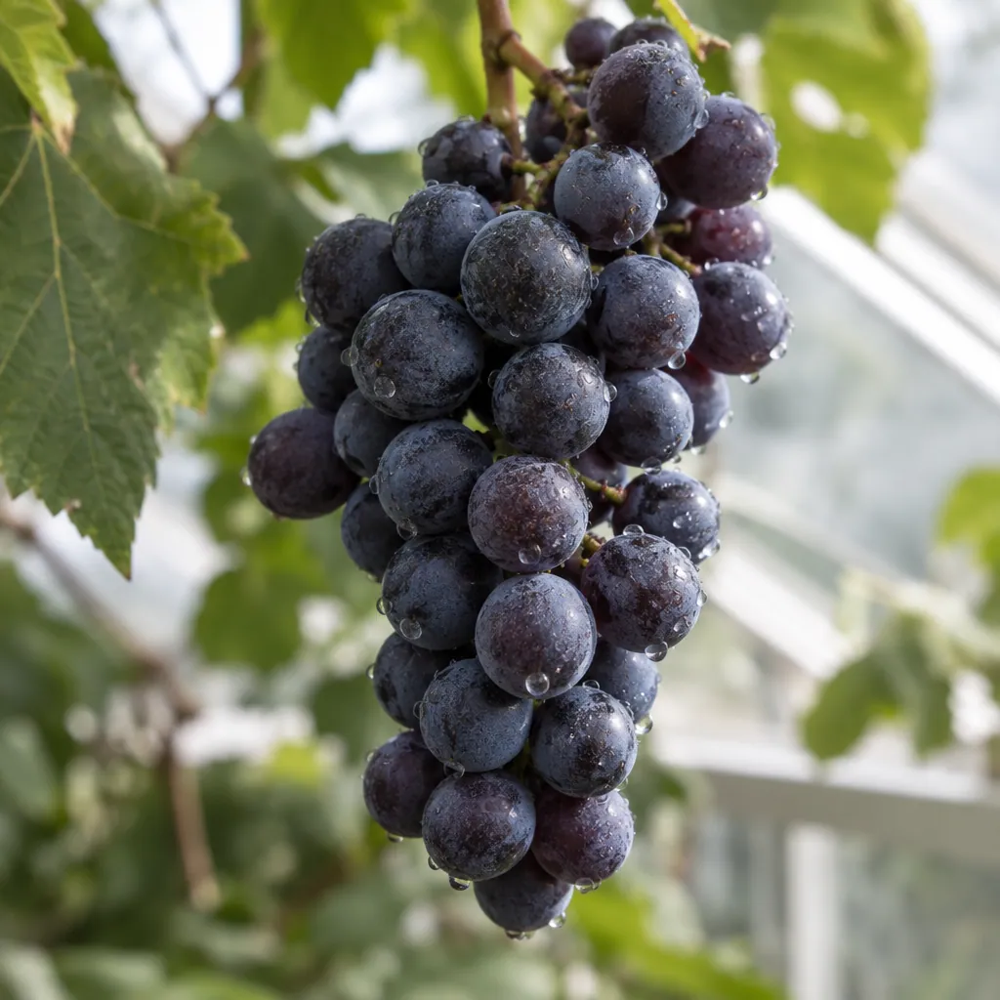
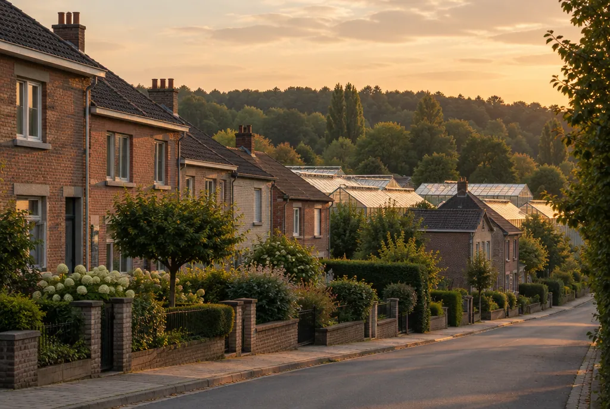

01
Boekhouding
U bezorgt de stukken, wij boeken ze in. Op het einde van het jaar ligt alles klaar voor de afsluiting en hoeft u niets meer te zoeken.
- Inboeken van aankopen en verkopen
- Btw-aangiftes op tijd
- Jaarafsluiting en jaarrekening
Boekhouding en fiscaliteit · Overijse
Een klein boekhoudkantoor aan de Brusselsesteenweg in Overijse. Boekhouding en belastingen sinds 1988, in het Nederlands of in het Frans.
5,0 · 2 Google-reviews · Lees de reviews op GoogleWat we doen
Twee vakken die bij elkaar horen. Wie het hele jaar uw boekhouding bijhoudt, weet ook wat telt als de aangifte eraan komt.
01
U bezorgt de stukken, wij boeken ze in. Op het einde van het jaar ligt alles klaar voor de afsluiting en hoeft u niets meer te zoeken.

02
Belastingen zijn geen verrassing meer als iemand het hele jaar meekijkt. En die brief van de FOD Financiën die u niet begrijpt, lezen we samen.
Het kantoor
Fourneau begon in 1988. Sinds 2003 staat Dominique Fourneau aan het hoofd van het kantoor. Een klein team, en dat merkt u: u belt, en er neemt iemand op die uw dossier kent.


Hoe het gaat
U hoeft niet met een perfect geordende map binnen te komen. Breng mee wat u hebt, daar beginnen we mee.

Een telefoontje naar 02 673 37 30 en we spreken een moment af.
ma tot vrWe overlopen uw situatie aan tafel. Daarna weet u wat we doen en wat het kost.
in het Nederlands of het FransFacturen, uittreksels, brieven. Wij leggen alles op de juiste plek.
ook als het nog een stapel isAangiftes, afsluiting, en een seintje als we iets van u nodig hebben.
u houdt het overzicht
Overijse ligt op de taalgrens. Een kantoor dat beide talen spreekt is hier geen luxe.

Vragen

Ja. Het kantoor ontvangt u van maandag tot vrijdag, op afspraak. Bel 02 673 37 30 of 0475 46 01 48 en we zoeken samen een moment.
Ja. U kiest zelf in welke taal we het gesprek voeren. Op de taalgrens is dat de gewoonste zaak.
Dat hangt af van uw dossier. Een loontrekkende met één aangifte is iets anders dan een vennootschap. Na het eerste gesprek krijgt u de prijs vooraf, zwart op wit.
Uw laatste aanslagbiljet, de aangifte van vorig jaar en, als u zelfstandige bent, een map met recente facturen. Hebt u niet alles? Kom toch. We zien dan wel wat er ontbreekt.
Dat kan. Neem gerust contact op, dan bekijken we samen wanneer en hoe de overstap het makkelijkst verloopt.
Brusselsesteenweg 523 in Overijse, langs de N4 richting Brussel. Route in Google Maps.
Contact
In de echte site komt dit rechtstreeks in de mailbox.
Een eerste schets, op maat van Fourneau. Jij kiest de stijl, ik zorg dat alles klopt.
één keer, alles inbegrepen
Geen voorschot. Je betaalt pas als de site klaar is.
Hosting en domein op jouw naam. Een aanpassing vraag je per keer aan.
Hosting en domein inbegrepen. Nieuwe diensten, uren of een vakantiesluiting zet ik er voor je op.
mijn aanraderStijn Vranken · 0496 25 14 45 · info@digital-impression.be